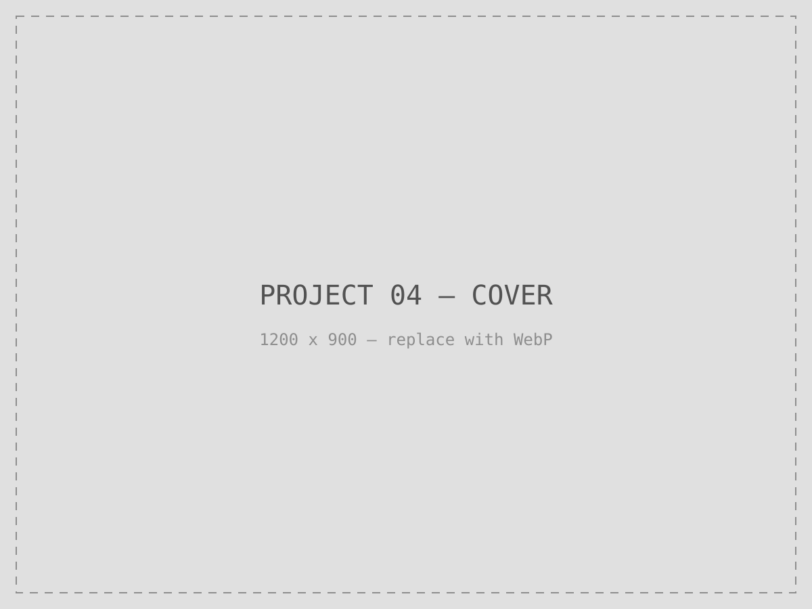

Detailed UI masked per NDA. Process artifacts and metrics shared with permission.
Legacy state
Wipfli Hub was running on Bootstrap 3.3, styled across 14 fragmented CSS files with no shared architecture — the kind of accumulation that happens when a product is extended by different people over different years without a standing system to converge on.
Migration scope
The upgrade to Bootstrap 5.2 touched 10+ pages, 25+ UI components, 12+ modals, 3+ forms, and 3+ web templates, spanning the Home, Engagement Summary, Profile, Teams, Information Request, and Security sections of the portal.
CSS architecture decision
Rather than migrate file-by-file and keep the same fragmentation, I consolidated all 14 stylesheets into a single scalable global architecture — one set of conventions, one specificity model, one place for every team to work from going forward instead of 14.

Execution
Outcome
The consolidated architecture is what every section listed above now runs on. Read as technical leadership on a modernization program, not a stylesheet cleanup: the same architecture later became the CSS layer Blueprint's tokens plug into (see the Blueprint Design System case study).